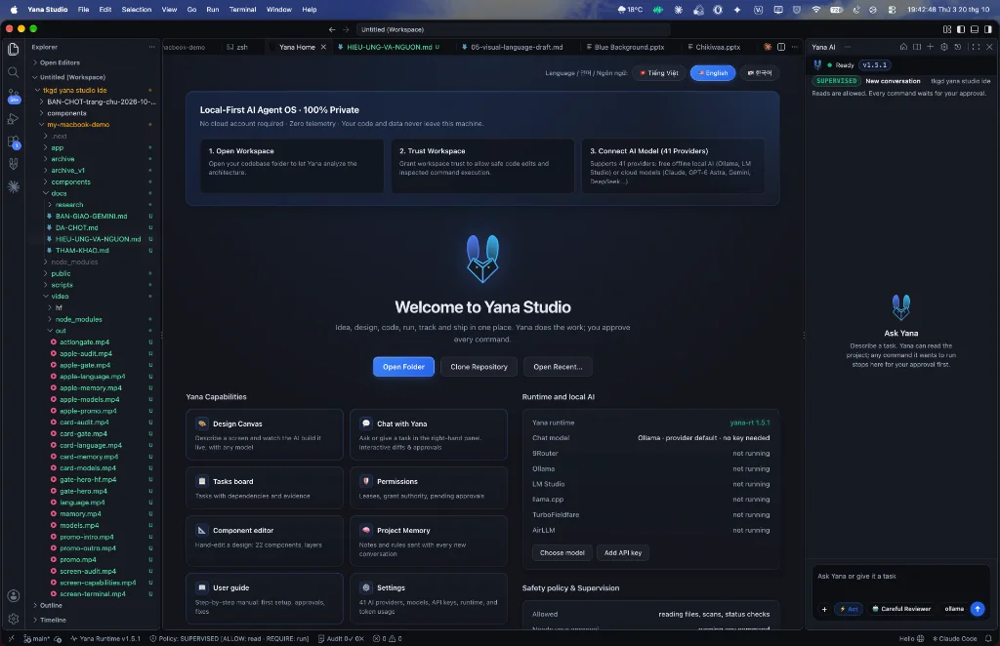
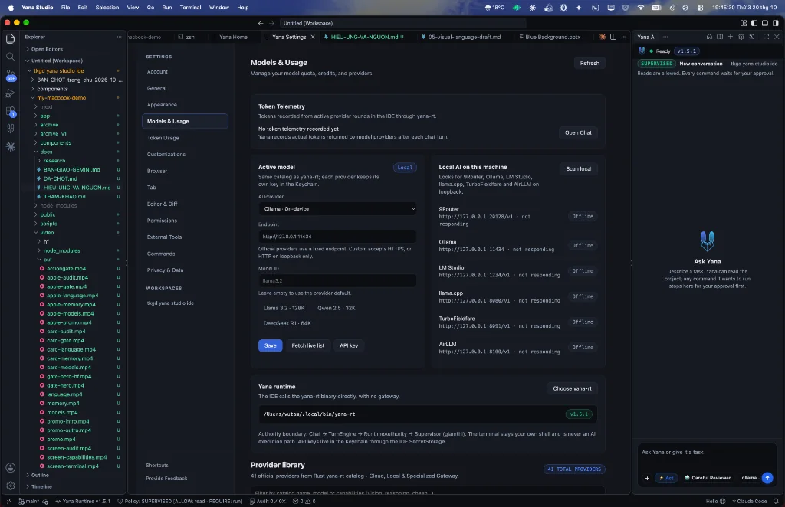

Mặt bàn làm việc của AI.
Quyền quyết định của bạn.
← không ai thay thế bạn!
Kế thừa trọn vẹn sức mạnh và extension của VS Code. Khác với Cursor hay Windsurf, ở đây bạn luôn làm chủ: AI không được phép âm thầm chạy lệnh nguy hiểm hay đè file khi chưa có cái gật đầu của bạn.

CHUYỂN ĐỘNG THEO CUỘN (SCROLL-DRIVEN)
Giao diện Yana Studio IDE thực tế trên MacBook Pro Apple Silicon
Welcome to Yana Studio · Local-first
Màn hình chào mừng thực tế: Thiết kế Visual Canvas, bảng Yana Capabilities, quản lý Task board, kết nối Runtime nội bộ và trợ lý AI Supervised.


Models & Usage · Token Telemetry Thực Tế
Màn hình cài đặt thực tế: Quản lý quota và token telemetry từ active provider, kết nối trực tiếp với Ollama (On-device), LM Studio và binary yana-rt.

Chạy Offline hoặc Kết Nối Cloud
Lựa chọn linh hoạt giữa việc giữ mã nguồn trên máy với mô hình cục bộ hoặc mở rộng với các mô hình suy luận hàng đầu.
• Anthropic: Claude 3.7 Sonnet & Opus
• OpenAI: GPT-4o / o1 Architecture
• Quản trị ranh giới:
yana-rt 1.5.1
SO SÁNH BẢN CHẤT
Cùng nền tảng VS Code.
Khác biệt hoàn toàn về triết lý an toàn.
Cursor tập trung vào việc tạo code tự động càng nhanh càng tốt. Yana Studio thiết kế cho các kỹ sư và doanh nghiệp cần sự chính xác, an toàn tuyệt đối và có bằng chứng audit minh bạch.
| Tiêu chí | Cursor / AI IDE thông thường | ✨ Yana Studio (Code-OSS + Runtime) |
|---|---|---|
| Nền tảng lõi | Fork từ VS Code | Fork trực tiếp từ Code-OSS (VS Code chuẩn) |
| Quyền thực thi lệnh shell | AI có thể tự sinh và chạy lệnh ẩn trong nền | Chặn mọi lệnh phá hoại (rm, drop db). Bắt buộc người dùng bấm Approve. |
| Kiểm soát tệp tin (File I/O) | AI tự động apply diff trực tiếp vào code | Xem trước diff rõ ràng, phân định ranh giới read vs write |
| Bảo mật & Quyền riêng tư | Phụ thuộc máy chủ proxy của nhà cung cấp | Chạy được offline với model cục bộ (Ollama, LM Studio, llama.cpp…) |
| Vết tích kiểm toán (Audit) | Chỉ có lịch sử chat thông thường | Audit Chain Hash Log: từng hành động đều được mã hóa bằng chứng |
MỘT QUY TRÌNH RÕ RÀNG
Từ mục tiêu đến kết quả.
Bước nào bạn cũng nhìn thấy.
Studio đặt project, model, công việc và quyết định của bạn trong cùng một không gian. Mỗi bước có chỗ riêng để bạn luôn nắm thế chủ động.
Mở thư mục thật
Chọn project trên máy của bạn. Studio giữ đường dẫn trực tiếp tới thư mục, tuyệt đối không nhân bản repository sang nơi khác.
Chọn trí tuệ
Xem model cloud hoặc local từ catalog của runtime. Thay đổi model không tự ý thay đổi quyền thực thi bên dưới.
Làm việc có ngữ cảnh
Trao đổi với Yana, mở tệp trong editor, theo dõi Git status và dùng terminal của chính bạn trên cùng một mặt bàn.
Giữ quyền quyết định
Khi AI cần can thiệp file hoặc chạy lệnh hệ thống, Studio hiển thị yêu cầu để bạn xem xét và bấm duyệt.
QUYỀN HẠN CÓ RANH GIỚI
Terminal của bạn.
Hành động của AI.
Hai đường riêng biệt.
Bạn có thể làm việc trực tiếp trong terminal shell cá nhân. Yana đi qua runtime và lớp kiểm soát năng lực. Nội dung AI tạo ra không bao giờ tự động biến thành lệnh shell.
Tìm hiểu Cổng Sự Thật & Hành Động ↗TRẠNG THÁI HIỆN TẠI
Đang dùng được gì?
Điều gì còn đang xây?
Báo cáo trung thực theo đúng tài liệu bàn giao, minh bạch với người dùng về tiến độ thực tế của sản phẩm.
Một workspace thật
- Project và tệp tại chỗ, editor bảo vệ khi file đổi bên ngoài.
- Terminal thật với tab, chia lưới, tìm kiếm và scrollback.
- Chat qua Yana runtime, lịch sử hội thoại và nút dừng tức thì.
- Git status, worktree và diff ở chế độ xem an toàn.
- Hỗ trợ Ollama local models và API model cloud.
Những lớp tiếp theo
- Thiết kế Visual Canvas vẫn ở trạng thái thử nghiệm.
- Màn quản trị quyền hạn và bằng chứng chi tiết hơn đang được phát triển.
- Bộ cài ký số macOS, Linux, Windows chưa đóng gói hoàn tất.
- Chưa có đồng bộ đám mây (ưu tiên bảo mật dữ liệu cục bộ).
Rõ ràng về nguồn gốc.
Bảo vệ quyền lợi tối đa cho bạn.
Yana AI cam kết tuân thủ nghiêm ngặt chuẩn mực sở hữu trí tuệ quốc tế, bảo vệ mã nguồn của khách hàng và tôn trọng quyền tác giả của cộng đồng mã nguồn mở.
Mã Nguồn Mở Code-OSS & MIT
Microsoft Open Source AttributionYana Studio được xây dựng trên nền tảng dự án mã nguồn mở Code-OSS do Microsoft khởi xướng và phát hành theo Giấy phép MIT.
- Yana Studio là sản phẩm độc lập, không trực thuộc, không được tài trợ hay xác nhận chính thức bởi Microsoft Corporation.
- "Visual Studio Code" và biểu trưng liên quan là thương hiệu đã đăng ký của Microsoft Corporation.
- Mọi bản quyền upstream của cộng đồng đóng góp được tôn trọng nguyên vẹn.
Bảo Vệ Dữ Liệu
Local-first, có giới hạn rõ ràngMã nguồn dự án và bí mật kinh doanh của bạn là tài sản tối thượng. Yana Studio thiết kế theo mô hình Local-First.
- Khi dùng model cục bộ (Ollama, LM Studio, llama.cpp…), prompt và code không rời khỏi máy. Khi chọn provider cloud, dữ liệu được gửi tới provider đó theo chính sách của họ.
- Yana không có máy chủ nhận code của bạn: Studio gọi model trực tiếp qua
yana-rttrên máy. - API key được mã hóa trong keystore của hệ điều hành, không nằm trong file của dự án.
Trách Nhiệm AI & Quyền Tác Giả Code
Human-in-the-Loop GovernanceYana AI chỉ đóng vai trò trợ lý hỗ trợ kỹ thuật; quyền quyết định thực thi luôn thuộc về bạn.
- Mọi can thiệp phá huỷ (`rm`, `drop database`, sửa file quan trọng) đều qua Cổng Hành Động (Action Gate) chờ bạn bấm Duyệt.
- Yana phát hành theo giấy phép Apache 2.0. Quyền đối với nội dung do model tạo ra tùy theo điều khoản của nhà cung cấp model bạn dùng.
Tương Thích macOS & Thương Hiệu Apple
Apple Inc. Trademark DisclaimerYana Studio tối ưu hoá trải nghiệm trực tiếp cho hệ điều hành macOS và vi xử lý Apple Silicon.
- macOS, MacBook Pro, iMac, Apple Silicon (M1/M2/M3/M4) là các thương hiệu đã đăng ký của Apple Inc. tại Hoa Kỳ và các quốc gia khác.
- Yana AI là dự án phần mềm độc lập nhằm mang đến trải nghiệm IDE có kiểm soát tốt nhất trên macOS.
- Mọi biểu tượng ứng dụng macOS xuất hiện nhằm mục đích minh hoạ khả năng tương thích công cụ của nhà phát triển.

Sẵn sàng trải nghiệm
Yana Studio trên Mac?
Không gian IDE local-first an toàn, minh bạch và trao trọn quyền quyết định cho bạn.